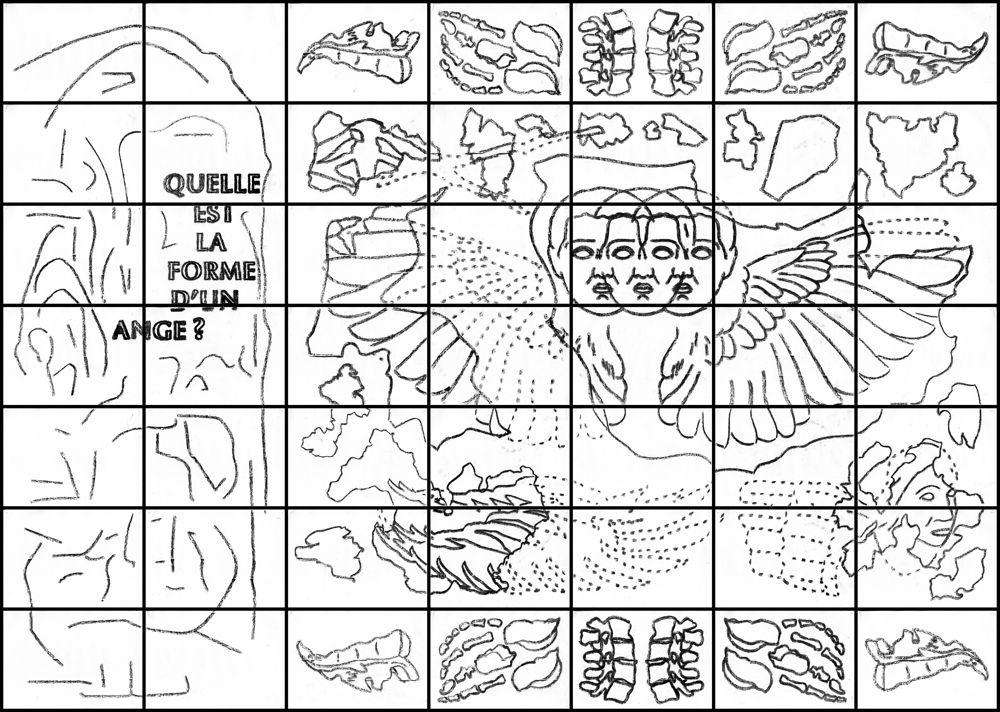
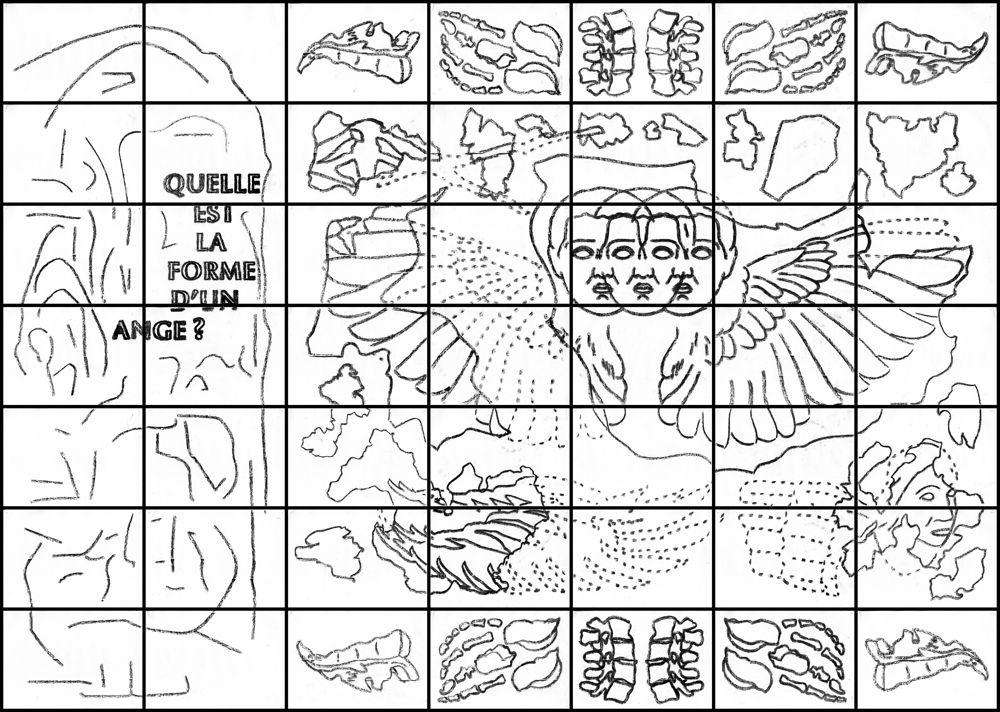

Qui reconnaît les visages ?
Une recherche sur le funéraire et l’ornement qui s’est incarnée avec une fiction graphique. Cette fiction s’inscrit dans une démarche prospective, en imaginant la forme que prendront les sépultures, rituels et monuments funéraires à venir. Celle-ci part du postulat suivant : avec une population vieillissante et la hausse accrue de la mortalité entraînée par les épidémies et les guerres, la mort redevient un fait central dans les sociétés du xxie siècle. Les éléments présentés au sein de cette exposition sont ainsi des relevés fictionnels des décennies à venir, montrant la forme que prendront les sépultures, rituels et monuments mortuaires du futur. Research on funerals and ornamentation that took shape in a graphic novel. This novel takes a forward-looking approach, imagining the form that future burials, rituals and funerary monuments will take. It is based on the following premise: with an ageing population and increased mortality caused by epidemics and wars, death is once again becoming a central issue in 21st-century societies. The items presented in this exhibition are fictional accounts of the decades to come, showing the form that burials, rituals and funerary monuments will take in the future.
Nancy
2025
affiche poster 70 x 100 cm
édition book 20 x 28,5 cm, 136 pages
accrochage display 800 x 220 cm

 
